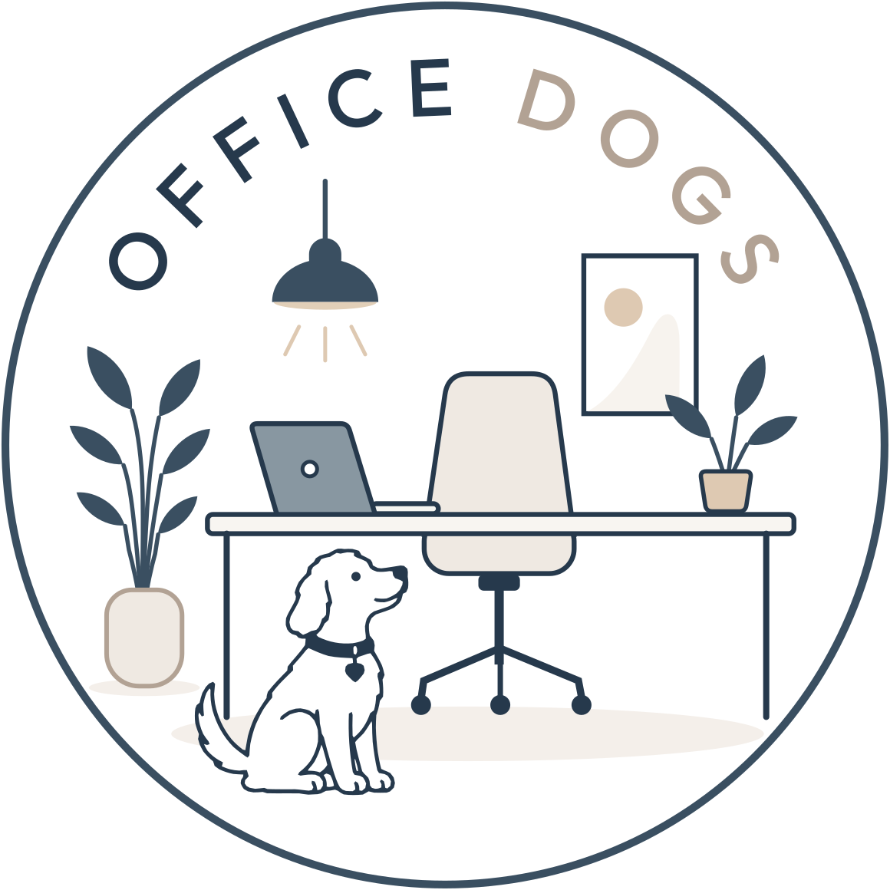

Office DogsBeratung für hundefreundliche Unternehmen
Individuelle Bürohunde-Konzepte – damit Hunde, Mitarbeitende und Arbeitsabläufe im Unternehmen zuverlässig zusammenpassen.
Den eigenen Hund mit ins Büro bringen zu können, ist für viele ein echter Pluspunkt – und kann ein guter Grund sein, auch wieder häufiger vor Ort statt im Homeoffice zu arbeiten.
Hunde können zu einer entspannten, angenehmen Arbeitsatmosphäre beitragen und damit Kreativität und produktives Arbeiten unterstützen.
Hunde bringen Menschen zusammen, schaffen Gesprächsanlässe und können so auch die Verbundenheit im Team stärken.
Die Vorteile entstehen nicht automatisch, nur weil Hunde mit ins Büro dürfen.
Es braucht klare Strukturen, die zum Unternehmen, zum Team und zu den Hunden passen.
Ich schaue mir Arbeitsabläufe, Räumlichkeiten und die vorhandenen oder geplanten Mensch-Hund-Teams direkt in Ihrem Unternehmen an.
Daraus entstehen klare Regeln und konkrete Lösungen, die zu Ihrem Unternehmen und Ihrem Arbeitsalltag passen.
Wir bleiben nicht bei der Theorie. Die wichtigsten Maßnahmen setzen wir direkt vor Ort um und schauen uns typische Situationen gemeinsam an – vom Ruheplatz über Begegnungen bis zum Umgang mit Besuchern oder mehreren Hunden.
Kommen weitere Hunde dazu oder verändern sich Abläufe, kann auch das Konzept angepasst werden. Auf Wunsch begleite ich Sie dabei weiter.
Leistungspaket
Für größere Standorte oder mehrere Teams erstelle ich Ihnen gerne ein individuelles Angebot.